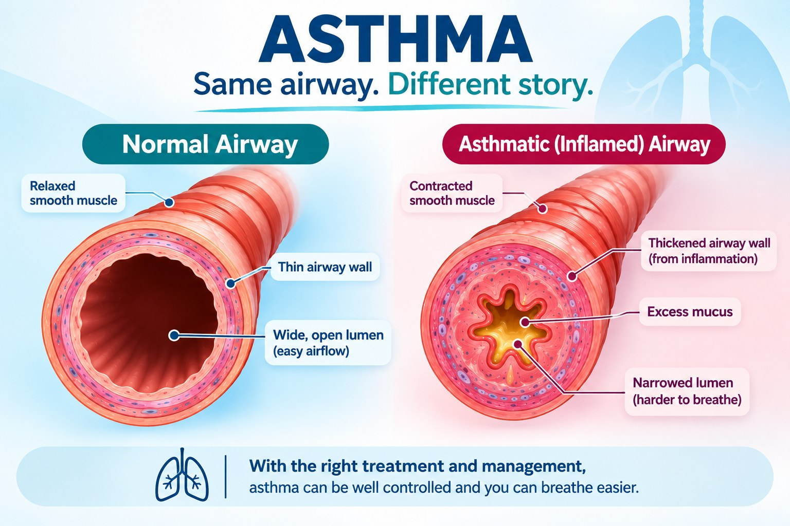

Patient guide
Living Well with Asthma: Diagnosis, Treatment, Diet and Inhaler Safety
What is asthma?
Asthma is a long-term condition where the breathing tubes in your lungs become inflamed and can narrow. You may notice wheezing, breathlessness, a tight chest or a cough. These symptoms often come and go, and tend to be worse at night or early in the morning. That "coming and going" is a key feature of asthma. (1)
Common triggers include viral infections, smoke, air pollution, and allergens if you are sensitive to them. Triggers are different for everyone. Exercise is good for you. If it brings on symptoms, ask your doctor how to manage that rather than giving up activity. (1)
Asthma is more than occasional attacks. Even when you feel fine, the airways can stay inflamed. Treatment that contains an inhaled steroid (ICS) calms this inflammation and lowers the chance of attacks. (1)
How is asthma diagnosed?
There is no single test. Your doctor listens to your symptoms and then looks for proof that the airflow in your lungs changes over time.
- Breathing test (spirometry) with a reliever puff. In adults, if your lung readings improve by at least 12% and 200 mL after a reliever medicine, this supports asthma. (1)
- Peak flow readings. If spirometry is not available, you may be asked to record peak flow at home for about two weeks. It is less reliable than spirometry, but still useful. (1)
- FeNO and blood eosinophils. These tests can support the diagnosis, but they cannot prove asthma by themselves, and normal results do not rule it out. (1)
If it is safe and practical, it helps to confirm the diagnosis before starting a steroid inhaler, because testing becomes harder once treatment has begun. But you should never be left without treatment you need. If you have already started, your doctor can still arrange further tests. (1)
How is asthma treated?
Treatment that includes an inhaled steroid is the foundation of asthma care. Guidelines advise against using only a quick-relief (reliever) inhaler on its own. (1)
For many adults and teenagers, the preferred plan uses one inhaler that contains both a steroid and formoterol, and it also serves as the reliever. In milder asthma it may be used only when needed. At higher treatment steps it can also be taken regularly. The best plan depends on your age, symptoms, risk of attacks and which medicines are available locally. Children's treatment can be different. (1)
Your treatment is adjusted step by step. Before increasing medicines, your doctor may check your inhaler technique, missed doses, other health conditions and triggers. (1)
Steroid tablets may be needed for a moderate or severe flare-up. Take them exactly as advised. Repeated or long courses can cause important side effects, so doctors try to keep them to a minimum. (1, 3)
If asthma stays uncontrolled even with correct inhaler use, a specialist can look for other causes and consider extra treatment. GINA 2026 lists newer injectable biologic medicines, such as depemokimab and an omalizumab biosimilar, which suit only some patients. (2)
What you can do
Learn your inhaler technique, follow a written asthma action plan, avoid smoke, and keep your review appointments. Do not stop prescribed treatment without speaking to your doctor.
What happens if asthma is not well controlled?
Poor control can mean more symptoms and more flare-ups. Severe asthma is also linked to reduced lung function and airflow that stays permanently limited. This does not mean everyone with asthma will develop permanent damage. (3)
Asthma can also change the structure of the airways over time (called airway remodelling). Whether early treatment prevents this in every person is not certain, but keeping asthma controlled is still an important goal. (3, 4)
Repeated or long-term steroid tablets can affect bones, blood sugar, eyes and infection risk. Preventing severe attacks helps you avoid needing them. (1, 3)
Can asthma be cured?
There is no proven cure for asthma at present, but many people reach a point where it is very well controlled.
Some people achieve "clinical remission": a lasting period with few or no symptoms or attacks, and stable lung function. Studies usually look for this over at least 12 months. Depending on the definition, remission may happen with or without ongoing treatment. It is not the same as a cure. (5, 6)
Getting asthma under good control early is sensible, but it cannot guarantee remission or prevent airway changes in every person. (4)
Do rice and oily foods make asthma worse?
Rice: There is no good evidence that rice triggers asthma attacks, and you do not need to avoid it. One pregnancy diet study included rice in a combined diet score, but it did not test rice on its own, and a later study also looked only at the overall score. (7, 8)
Fast food and fried food: Some studies have found that people who eat fast food often, especially burgers, are more likely to have asthma problems. These were mostly observational studies, so they do not prove that fast food or oil causes asthma. (9) In one small Indian study, people with asthma reported eating more fast food and salty or fried snacks. The findings for fizzy drinks were not statistically clear. (10)
A true food allergy can trigger symptoms in a person who is allergic to that food. Having asthma on its own is not a reason to cut out foods. Please do not remove foods from your diet unless a doctor has found an allergy or advised you to. (1)
Is there a special diet for asthma?
No particular diet has been proven to prevent or treat asthma. (11, 12) Some studies link eating more fruit with less wheezing, and more vegetables with lower rates of asthma, but results differ between foods. Most of this research is observational, so it cannot show that a food prevents asthma. (13)
A balanced diet with vegetables, fruit, beans or lentils, whole grains and other nourishing foods is a good choice for your general health. A large analysis found no statistically significant difference in asthma risk between Mediterranean, Western or "prudent" eating patterns. (12, 14) Food supports your health, but it does not replace your asthma medicines.
If you are overweight, your doctor can talk with you about weight management. It may help some people with asthma, but it is not a cure. (4)
Are inhalers safe to use for years?
For most people, the benefits of prescribed steroid inhalers are greater than the risks. The risks depend on the medicine and the dose, and long-term or high-dose use can cause side effects in some people. (15)
- Rinse your mouth after using a steroid inhaler to help prevent mouth thrush.
- Ask your doctor or pharmacist to check your technique, and whether a spacer would suit your inhaler.
- Never stop or cut down your treatment on your own because of worry about side effects. Talk to your doctor first.
When to get urgent help
Reviewed by Dr Zain
References
- Global Initiative for Asthma. Global Strategy for Asthma Management and Prevention, 2026 update.
- Global Initiative for Asthma. Summary Guide for Asthma Management and Prevention, 2026 update.
- Farinha I, Heaney LG. Barriers to clinical remission in severe asthma. Respiratory Research. 2024;25:178. doi:10.1186/s12931-024-02812-3.
- Cojocaru E, et al. Challenges and Opportunities in Achieving Asthma Remission. Journal of Clinical Medicine. 2025;14(8):2835. doi:10.3390/jcm14082835.
- Thomas D, et al. Asthma remission: what is it and how can it be achieved? European Respiratory Journal. 2022;60. doi:10.1183/13993003.02583-2021.
- Gunaydin F, et al. Is Asthma Remission a New Achievable Goal? A Review of the Current Drug-Related Evidence and Predictors. Allergy. 2026. doi:10.1111/all.70388.
- Venter C, et al. The maternal diet index in pregnancy is associated with offspring allergic diseases: the Healthy Start study. Allergy. 2021;76:162-172. doi:10.1111/all.14949.
- Bodén S, et al. Associations Between the Maternal Diet Index and Childhood Asthma: The NorthPop and Healthy Start Cohorts. Clinical and Translational Allergy. 2025. doi:10.1002/clt2.70144.
- Wang C, et al. Is the consumption of fast foods associated with asthma or other allergic diseases? Respirology. 2018;23:901-913. doi:10.1111/resp.13339.
- Poongadan MN, Gupta N, Kumar R. Dietary pattern and asthma in India. Pneumonologia i Alergologia Polska. 2016;84:160-167. doi:10.5603/PiAP.2016.0018.
- Guilleminault L, et al. Diet and Asthma: Is It Time to Adapt Our Message? Nutrients. 2017;9(11):1227. doi:10.3390/nu9111227.
- Parvizian M, et al. Relationship between dietary patterns and asthma: a systematic review and meta-analysis. Canadian Journal of Respiratory, Critical Care, and Sleep Medicine. 2020. doi:10.1080/24745332.2020.1716647.
- Hosseini B, et al. Effects of Fruit and Vegetable Consumption on Risk of Asthma, Wheezing and Immune Responses: A Systematic Review and Meta-Analysis. Nutrients. 2017;9(4):341. doi:10.3390/nu9040341.
- Rodrigues M, et al. Diet and Asthma: A Narrative Review. Applied Sciences. 2023;13(11):6398. doi:10.3390/app13116398.
- Patel R, et al. Systemic adverse effects from inhaled corticosteroid use in asthma: a systematic review. BMJ Open Respiratory Research. 2020;7:e000756. doi:10.1136/bmjresp-2020-000756.